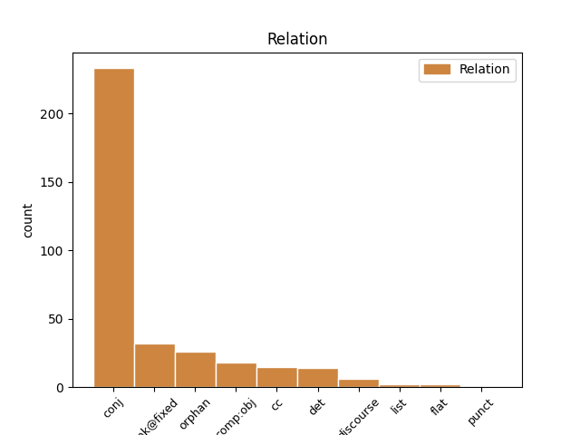
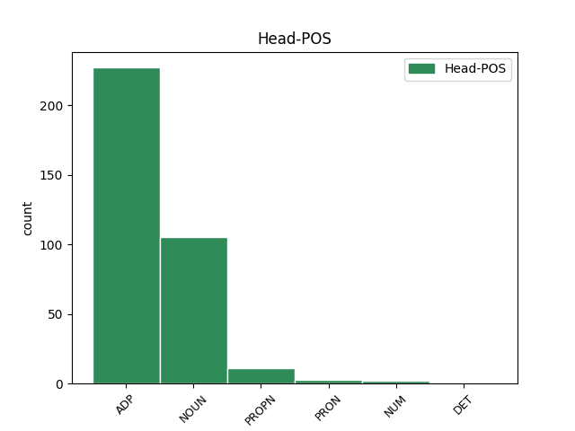
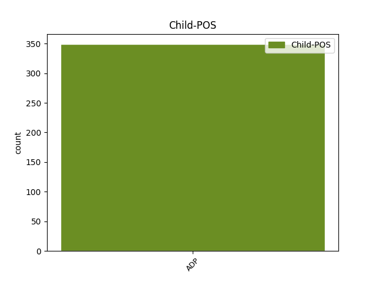

Distribution of features within this leaf



Agreement Rules sorted by frequency.
- When the dependent token is the conjunct(conj) of the head token, and the head token is ADP and the dependent token is ADP.
1 No _ _ _ _ 0 _ _ _
2 , _ _ _ _ 0 _ _ _
3 najčešće _ _ _ _ 0 _ _ _
4 se _ _ _ _ 0 _ _ _
5 preporuča _ _ _ _ 0 _ _ _
6 za za ADP Sa Case=Acc 0 _ _ _
7 ublažavanje _ _ _ _ 0 _ _ _
8 stresa _ _ _ _ 0 _ _ _
9 i _ _ _ _ 0 _ _ _
10 napetosti _ _ _ _ 0 _ _ _
11 , _ _ _ _ 0 _ _ _
12 umirenje _ _ _ _ 0 _ _ _
13 živčanog _ _ _ _ 0 _ _ _
14 sustava _ _ _ _ 0 _ _ _
15 , _ _ _ _ 0 _ _ _
16 povećanje _ _ _ _ 0 _ _ _
17 vitalnosti _ _ _ _ 0 _ _ _
18 i _ _ _ _ 0 _ _ _
19 zdravlja _ _ _ _ 0 _ _ _
20 , _ _ _ _ 0 _ _ _
21 kao _ _ _ _ 0 _ _ _
22 i _ _ _ _ 0 _ _ _
23 za za ADP Sa Case=Acc 6 conj _ _
24 sprječavanje _ _ _ _ 0 _ _ _
25 bolnih _ _ _ _ 0 _ _ _
26 stanja _ _ _ _ 0 _ _ _
27 leđa _ _ _ _ 0 _ _ _
28 i _ _ _ _ 0 _ _ _
29 glavobolje _ _ _ _ 0 _ _ _
30 . _ _ _ _ 0 _ _ _
1 I _ _ _ _ 0 _ _ _
2 što _ _ _ _ 0 _ _ _
3 je _ _ _ _ 0 _ _ _
4 to _ _ _ _ 0 _ _ _
5 što _ _ _ _ 0 _ _ _
6 je _ _ _ _ 0 _ _ _
7 stišano _ _ _ _ 0 _ _ _
8 , _ _ _ _ 0 _ _ _
9 odnosno _ _ _ _ 0 _ _ _
10 , _ _ _ _ 0 _ _ _
11 što _ _ _ _ 0 _ _ _
12 je _ _ _ _ 0 _ _ _
13 to _ _ _ _ 0 _ _ _
14 australsko _ _ _ _ 0 _ _ _
15 u u ADP Sl Case=Loc 17 cc _ _
16 australskim _ _ _ _ 0 _ _ _
17 filmovima film NOUN Ncmpl Case=Loc|Gender=Masc|Number=Plur 0 _ _ _
18 , _ _ _ _ 0 _ _ _
19 pitamo _ _ _ _ 0 _ _ _
20 se _ _ _ _ 0 _ _ _
21 u _ _ _ _ 0 _ _ _
22 vremenu _ _ _ _ 0 _ _ _
23 u _ _ _ _ 0 _ _ _
24 kojemu _ _ _ _ 0 _ _ _
25 mnogi _ _ _ _ 0 _ _ _
26 žele _ _ _ _ 0 _ _ _
27 da _ _ _ _ 0 _ _ _
28 svi _ _ _ _ 0 _ _ _
29 filmovi _ _ _ _ 0 _ _ _
30 budu _ _ _ _ 0 _ _ _
31 nalik _ _ _ _ 0 _ _ _
32 američkima _ _ _ _ 0 _ _ _
33 . _ _ _ _ 0 _ _ _
1 Nakon _ _ _ _ 0 _ _ _
2 završetka _ _ _ _ 0 _ _ _
3 Domovinskog _ _ _ _ 0 _ _ _
4 rata _ _ _ _ 0 _ _ _
5 i _ _ _ _ 0 _ _ _
6 ratnih _ _ _ _ 0 _ _ _
7 djelovanja _ _ _ _ 0 _ _ _
8 od _ _ _ _ 0 _ _ _
9 mina _ _ _ _ 0 _ _ _
10 stradavaju _ _ _ _ 0 _ _ _
11 uglavnom _ _ _ _ 0 _ _ _
12 civilne _ _ _ _ 0 _ _ _
13 osobe _ _ _ _ 0 _ _ _
14 , _ _ _ _ 0 _ _ _
15 povratnici _ _ _ _ 0 _ _ _
16 u u ADP Sa Case=Acc 20 det _ _
17 svoja _ _ _ _ 0 _ _ _
18 ratom _ _ _ _ 0 _ _ _
19 razrušena _ _ _ _ 0 _ _ _
20 mjesta mjesto NOUN Ncnpa Case=Acc|Gender=Neut|Number=Plur 0 _ _ _
21 koji _ _ _ _ 0 _ _ _
22 , _ _ _ _ 0 _ _ _
23 baveći _ _ _ _ 0 _ _ _
24 se _ _ _ _ 0 _ _ _
25 poljoprivredom _ _ _ _ 0 _ _ _
26 , _ _ _ _ 0 _ _ _
27 stočarstvom _ _ _ _ 0 _ _ _
28 , _ _ _ _ 0 _ _ _
29 lovom _ _ _ _ 0 _ _ _
30 ili _ _ _ _ 0 _ _ _
31 sakupljanjem _ _ _ _ 0 _ _ _
32 drva _ _ _ _ 0 _ _ _
33 za _ _ _ _ 0 _ _ _
34 ogrjev _ _ _ _ 0 _ _ _
35 , _ _ _ _ 0 _ _ _
36 ulaze _ _ _ _ 0 _ _ _
37 u _ _ _ _ 0 _ _ _
38 minski _ _ _ _ 0 _ _ _
39 sumnjiva _ _ _ _ 0 _ _ _
40 područja _ _ _ _ 0 _ _ _
41 koja _ _ _ _ 0 _ _ _
42 još _ _ _ _ 0 _ _ _
43 uvijek _ _ _ _ 0 _ _ _
44 nose _ _ _ _ 0 _ _ _
45 smrtonosnu _ _ _ _ 0 _ _ _
46 opasnost _ _ _ _ 0 _ _ _
47 , _ _ _ _ 0 _ _ _
48 mine _ _ _ _ 0 _ _ _
49 i _ _ _ _ 0 _ _ _
50 druga _ _ _ _ 0 _ _ _
51 neeksplodirana _ _ _ _ 0 _ _ _
52 sredstva _ _ _ _ 0 _ _ _
53 zaostala _ _ _ _ 0 _ _ _
54 iz _ _ _ _ 0 _ _ _
55 rata _ _ _ _ 0 _ _ _
56 . _ _ _ _ 0 _ _ _
1 To _ _ _ _ 0 _ _ _
2 se _ _ _ _ 0 _ _ _
3 postiže _ _ _ _ 0 _ _ _
4 suradnjom suradnja NOUN Ncfsi Case=Ins|Gender=Fem|Number=Sing 0 _ _ _
5 naše _ _ _ _ 0 _ _ _
6 slobode _ _ _ _ 0 _ _ _
7 s _ _ _ _ 0 _ _ _
8 Božjom _ _ _ _ 0 _ _ _
9 milošću _ _ _ _ 0 _ _ _
10 i _ _ _ _ 0 _ _ _
11 ljubavlju _ _ _ _ 0 _ _ _
12 , _ _ _ _ 0 _ _ _
13 s sa ADP Si Case=Ins 4 conj _ _
14 Božjom _ _ _ _ 0 _ _ _
15 ponudom _ _ _ _ 0 _ _ _
16 . _ _ _ _ 0 _ _ _
1 Do do ADP Sg Case=Gen 0 _ _ _
2 prije prije ADP Sg Case=Gen 1 comp:obj _ _
3 deset _ _ _ _ 0 _ _ _
4 godina _ _ _ _ 0 _ _ _
5 u _ _ _ _ 0 _ _ _
6 nas _ _ _ _ 0 _ _ _
7 je _ _ _ _ 0 _ _ _
8 nije _ _ _ _ 0 _ _ _
9 ni _ _ _ _ 0 _ _ _
10 bilo _ _ _ _ 0 _ _ _
11 , _ _ _ _ 0 _ _ _
12 a _ _ _ _ 0 _ _ _
13 danas _ _ _ _ 0 _ _ _
14 je _ _ _ _ 0 _ _ _
15 u _ _ _ _ 0 _ _ _
16 punom _ _ _ _ 0 _ _ _
17 zamahu _ _ _ _ 0 _ _ _
18 , _ _ _ _ 0 _ _ _
19 dok _ _ _ _ 0 _ _ _
20 kontrole _ _ _ _ 0 _ _ _
21 nema _ _ _ _ 0 _ _ _
22 kao _ _ _ _ 0 _ _ _
23 i _ _ _ _ 0 _ _ _
24 na _ _ _ _ 0 _ _ _
25 nizu _ _ _ _ 0 _ _ _
26 drugih _ _ _ _ 0 _ _ _
27 područja _ _ _ _ 0 _ _ _
28 , _ _ _ _ 0 _ _ _
29 upozorava _ _ _ _ 0 _ _ _
30 prof. _ _ _ _ 0 _ _ _
31 dr. _ _ _ _ 0 _ _ _
32 Božidar _ _ _ _ 0 _ _ _
33 Vrhovac _ _ _ _ 0 _ _ _
34 , _ _ _ _ 0 _ _ _
35 pročelnik _ _ _ _ 0 _ _ _
36 Zavoda _ _ _ _ 0 _ _ _
37 za _ _ _ _ 0 _ _ _
38 kliničku _ _ _ _ 0 _ _ _
39 farmakologiju _ _ _ _ 0 _ _ _
40 Interne _ _ _ _ 0 _ _ _
41 klinike _ _ _ _ 0 _ _ _
42 KBC _ _ _ _ 0 _ _ _
43 Rebro _ _ _ _ 0 _ _ _
44 Medicinskog _ _ _ _ 0 _ _ _
45 fakulteta _ _ _ _ 0 _ _ _
46 u _ _ _ _ 0 _ _ _
47 Zagrebu _ _ _ _ 0 _ _ _
48 , _ _ _ _ 0 _ _ _
49 predsjednik _ _ _ _ 0 _ _ _
50 Povjerenstva _ _ _ _ 0 _ _ _
51 za _ _ _ _ 0 _ _ _
52 medicinsku _ _ _ _ 0 _ _ _
53 etiku _ _ _ _ 0 _ _ _
54 i _ _ _ _ 0 _ _ _
55 deontologiju _ _ _ _ 0 _ _ _
56 Hrvatske _ _ _ _ 0 _ _ _
57 liječničke _ _ _ _ 0 _ _ _
58 komore _ _ _ _ 0 _ _ _
59 . _ _ _ _ 0 _ _ _
1 Naime _ _ _ _ 0 _ _ _
2 , _ _ _ _ 0 _ _ _
3 prošle _ _ _ _ 0 _ _ _
4 godine _ _ _ _ 0 _ _ _
5 su _ _ _ _ 0 _ _ _
6 prvi _ _ _ _ 0 _ _ _
7 put _ _ _ _ 0 _ _ _
8 uveli _ _ _ _ 0 _ _ _
9 tu _ _ _ _ 0 _ _ _
10 tehniku _ _ _ _ 0 _ _ _
11 , _ _ _ _ 0 _ _ _
12 koja _ _ _ _ 0 _ _ _
13 je _ _ _ _ 0 _ _ _
14 zadnji _ _ _ _ 0 _ _ _
15 put _ _ _ _ 0 _ _ _
16 viđena _ _ _ _ 0 _ _ _
17 davne _ _ _ _ 0 _ _ _
18 2001. _ _ _ _ 0 _ _ _
19 u u ADP Sl Case=Loc 20 cc _ _
20 Minardiju Minardi PROPN Npmsl Case=Loc|Gender=Masc|Number=Sing 0 _ _ _
21 , _ _ _ _ 0 _ _ _
22 upravo _ _ _ _ 0 _ _ _
23 u _ _ _ _ 0 _ _ _
24 vrijeme _ _ _ _ 0 _ _ _
25 dok _ _ _ _ 0 _ _ _
26 je _ _ _ _ 0 _ _ _
27 Alonso _ _ _ _ 0 _ _ _
28 vozio _ _ _ _ 0 _ _ _
29 za _ _ _ _ 0 _ _ _
30 dotičnu _ _ _ _ 0 _ _ _
31 momčad _ _ _ _ 0 _ _ _
32 . _ _ _ _ 0 _ _ _
1 Male _ _ _ _ 0 _ _ _
2 su _ _ _ _ 0 _ _ _
3 dvorane _ _ _ _ 0 _ _ _
4 smjestili _ _ _ _ 0 _ _ _
5 ispod _ _ _ _ 0 _ _ _
6 zemlje _ _ _ _ 0 _ _ _
7 , _ _ _ _ 0 _ _ _
8 kao _ _ _ _ 0 _ _ _
9 i _ _ _ _ 0 _ _ _
10 dvoetažnu _ _ _ _ 0 _ _ _
11 garažu _ _ _ _ 0 _ _ _
12 , _ _ _ _ 0 _ _ _
13 a _ _ _ _ 0 _ _ _
14 komercijalne _ _ _ _ 0 _ _ _
15 sadržaje sadržaj NOUN Ncmpa Case=Acc|Gender=Masc|Number=Plur 0 _ _ _
16 u u ADP Sa Case=Acc 15 orphan _ _
17 toranj _ _ _ _ 0 _ _ _
18 visok _ _ _ _ 0 _ _ _
19 20 _ _ _ _ 0 _ _ _
20 katova _ _ _ _ 0 _ _ _
21 . _ _ _ _ 0 _ _ _
1 Također _ _ _ _ 0 _ _ _
2 , _ _ _ _ 0 _ _ _
3 Taslidžić _ _ _ _ 0 _ _ _
4 u _ _ _ _ 0 _ _ _
5 knjizi _ _ _ _ 0 _ _ _
6 » _ _ _ _ 0 _ _ _
7 Na _ _ _ _ 0 _ _ _
8 vratima vrata NOUN Ncnpl Case=Loc|Gender=Neut|Number=Plur 0 _ _ _
9 naroda _ _ _ _ 0 _ _ _
10 , _ _ _ _ 0 _ _ _
11 na na ADP Sl Case=Loc 8 list _ _
12 granici _ _ _ _ 0 _ _ _
13 svjetova _ _ _ _ 0 _ _ _
14 « _ _ _ _ 0 _ _ _
15 bilježi _ _ _ _ 0 _ _ _
16 kako _ _ _ _ 0 _ _ _
17 se _ _ _ _ 0 _ _ _
18 perivoj _ _ _ _ 0 _ _ _
19 prostire _ _ _ _ 0 _ _ _
20 na _ _ _ _ 0 _ _ _
21 površini _ _ _ _ 0 _ _ _
22 od _ _ _ _ 0 _ _ _
23 oko _ _ _ _ 0 _ _ _
24 osam _ _ _ _ 0 _ _ _
25 hektara _ _ _ _ 0 _ _ _
26 , _ _ _ _ 0 _ _ _
27 a _ _ _ _ 0 _ _ _
28 dvorac _ _ _ _ 0 _ _ _
29 je _ _ _ _ 0 _ _ _
30 1824. _ _ _ _ 0 _ _ _
31 godine _ _ _ _ 0 _ _ _
32 bio _ _ _ _ 0 _ _ _
33 okružen _ _ _ _ 0 _ _ _
34 šljivikom _ _ _ _ 0 _ _ _
35 i _ _ _ _ 0 _ _ _
36 šumom _ _ _ _ 0 _ _ _
37 i _ _ _ _ 0 _ _ _
38 tek _ _ _ _ 0 _ _ _
39 poslije _ _ _ _ 0 _ _ _
40 preoblikovan _ _ _ _ 0 _ _ _
41 u _ _ _ _ 0 _ _ _
42 perivoj _ _ _ _ 0 _ _ _
43 . _ _ _ _ 0 _ _ _
1 Duško _ _ _ _ 0 _ _ _
2 Pijetlović _ _ _ _ 0 _ _ _
3 , _ _ _ _ 0 _ _ _
4 Aleksandar _ _ _ _ 0 _ _ _
5 Šapić _ _ _ _ 0 _ _ _
6 , _ _ _ _ 0 _ _ _
7 Vanja _ _ _ _ 0 _ _ _
8 Udovičić _ _ _ _ 0 _ _ _
9 i _ _ _ _ 0 _ _ _
10 Vladimir _ _ _ _ 0 _ _ _
11 Vujasinović _ _ _ _ 0 _ _ _
12 postigli _ _ _ _ 0 _ _ _
13 su _ _ _ _ 0 _ _ _
14 po po ADP Sa Case=Acc 15 discourse _ _
15 jedan jedan NUM Mlcmsan Animacy=Inan|Case=Acc|Gender=Masc|Number=Sing|NumType=Card 0 _ _ _
16 zgoditak _ _ _ _ 0 _ _ _
17 ; _ _ _ _ 0 _ _ _
18 Peter _ _ _ _ 0 _ _ _
19 Varellas _ _ _ _ 0 _ _ _
20 postigao _ _ _ _ 0 _ _ _
21 je _ _ _ _ 0 _ _ _
22 oba _ _ _ _ 0 _ _ _
23 zgoditka _ _ _ _ 0 _ _ _
24 za _ _ _ _ 0 _ _ _
25 SAD _ _ _ _ 0 _ _ _
26 . _ _ _ _ 0 _ _ _
1 Podtajnik _ _ _ _ 0 _ _ _
2 američkog _ _ _ _ 0 _ _ _
3 državnog _ _ _ _ 0 _ _ _
4 tajništva _ _ _ _ 0 _ _ _
5 Marc _ _ _ _ 0 _ _ _
6 Grossman _ _ _ _ 0 _ _ _
7 sastao _ _ _ _ 0 _ _ _
8 se _ _ _ _ 0 _ _ _
9 u _ _ _ _ 0 _ _ _
10 četvrtak _ _ _ _ 0 _ _ _
11 s _ _ _ _ 0 _ _ _
12 dužnosnicima _ _ _ _ 0 _ _ _
13 Srbije _ _ _ _ 0 _ _ _
14 i _ _ _ _ 0 _ _ _
15 Crne _ _ _ _ 0 _ _ _
16 Gore _ _ _ _ 0 _ _ _
17 , _ _ _ _ 0 _ _ _
18 ističući _ _ _ _ 0 _ _ _
19 kako _ _ _ _ 0 _ _ _
20 daljnji _ _ _ _ 0 _ _ _
21 napredak _ _ _ _ 0 _ _ _
22 zemlje _ _ _ _ 0 _ _ _
23 ovisi _ _ _ _ 0 _ _ _
24 o _ _ _ _ 0 _ _ _
25 ispunjenju _ _ _ _ 0 _ _ _
26 njezinih _ _ _ _ 0 _ _ _
27 međunarodnih _ _ _ _ 0 _ _ _
28 obveza _ _ _ _ 0 _ _ _
29 , _ _ _ _ 0 _ _ _
30 prije prije ADP Sg Case=Gen 32 discourse _ _
31 svega _ _ _ _ 0 _ _ _
32 suradnje suradnja NOUN Ncfsg Case=Gen|Gender=Fem|Number=Sing 0 _ _ _
33 s _ _ _ _ 0 _ _ _
34 ICTY-em _ _ _ _ 0 _ _ _
35 . _ _ _ _ 0 _ _ _
1 Nastupao _ _ _ _ 0 _ _ _
2 je _ _ _ _ 0 _ _ _
3 u _ _ _ _ 0 _ _ _
4 filmovima _ _ _ _ 0 _ _ _
5 i _ _ _ _ 0 _ _ _
6 u u ADP Sl Case=Loc 0 _ _ _
7 drugim _ _ _ _ 0 _ _ _
8 europskim _ _ _ _ 0 _ _ _
9 zemljama _ _ _ _ 0 _ _ _
10 , _ _ _ _ 0 _ _ _
11 posebice _ _ _ _ 0 _ _ _
12 u u ADP Sl Case=Loc 6 discourse _ _
13 Italiji _ _ _ _ 0 _ _ _
14 , _ _ _ _ 0 _ _ _
15 gdje _ _ _ _ 0 _ _ _
16 je _ _ _ _ 0 _ _ _
17 postao _ _ _ _ 0 _ _ _
18 slavan _ _ _ _ 0 _ _ _
19 zahvaljujući _ _ _ _ 0 _ _ _
20 TV _ _ _ _ 0 _ _ _
21 showu _ _ _ _ 0 _ _ _
22 " _ _ _ _ 0 _ _ _
23 Odisej _ _ _ _ 0 _ _ _
24 " _ _ _ _ 0 _ _ _
25 . _ _ _ _ 0 _ _ _
1 Upravo _ _ _ _ 0 _ _ _
2 su _ _ _ _ 0 _ _ _
3 na _ _ _ _ 0 _ _ _
4 velikoj _ _ _ _ 0 _ _ _
5 europskoj _ _ _ _ 0 _ _ _
6 turneji _ _ _ _ 0 _ _ _
7 u u ADP Sl Case=Loc 8 comp:obj _ _
8 sklopu sklop NOUN Ncmsl Case=Loc|Gender=Masc|Number=Sing 0 _ _ _
9 koje _ _ _ _ 0 _ _ _
10 će _ _ _ _ 0 _ _ _
11 nastupiti _ _ _ _ 0 _ _ _
12 i _ _ _ _ 0 _ _ _
13 u _ _ _ _ 0 _ _ _
14 našem _ _ _ _ 0 _ _ _
15 dobrom _ _ _ _ 0 _ _ _
16 starom _ _ _ _ 0 _ _ _
17 Aquariusu _ _ _ _ 0 _ _ _
18 , _ _ _ _ 0 _ _ _
19 na _ _ _ _ 0 _ _ _
20 17. _ _ _ _ 0 _ _ _
21 rođendanu _ _ _ _ 0 _ _ _
22 kultne _ _ _ _ 0 _ _ _
23 radijske _ _ _ _ 0 _ _ _
24 emisije _ _ _ _ 0 _ _ _
25 Blackout _ _ _ _ 0 _ _ _
26 koju _ _ _ _ 0 _ _ _
27 možete _ _ _ _ 0 _ _ _
28 pratiti _ _ _ _ 0 _ _ _
29 svakog _ _ _ _ 0 _ _ _
30 utorka _ _ _ _ 0 _ _ _
31 u _ _ _ _ 0 _ _ _
32 22 _ _ _ _ 0 _ _ _
33 sata _ _ _ _ 0 _ _ _
34 . _ _ _ _ 0 _ _ _
1 Evo _ _ _ _ 0 _ _ _
2 , _ _ _ _ 0 _ _ _
3 to _ _ _ _ 0 _ _ _
4 je _ _ _ _ 0 _ _ _
5 ono _ _ _ _ 0 _ _ _
6 zbog _ _ _ _ 0 _ _ _
7 čega _ _ _ _ 0 _ _ _
8 si sebe PRON Px--sd Case=Dat|PronType=Prs|Reflex=Yes 0 _ _ _
9 mi _ _ _ _ 0 _ _ _
10 , _ _ _ _ 0 _ _ _
11 usprkos usprkos ADP Sd Case=Dat 8 discourse _ _
12 svemu _ _ _ _ 0 _ _ _
13 , _ _ _ _ 0 _ _ _
14 simpatičan _ _ _ _ 0 _ _ _
15 . _ _ _ _ 0 _ _ _
1 I _ _ _ _ 0 _ _ _
2 ne _ _ _ _ 0 _ _ _
3 samo _ _ _ _ 0 _ _ _
4 kako _ _ _ _ 0 _ _ _
5 se _ _ _ _ 0 _ _ _
6 s _ _ _ _ 0 _ _ _
7 podsmjehom _ _ _ _ 0 _ _ _
8 gleda _ _ _ _ 0 _ _ _
9 nas mi PRON Pp1-pa Case=Acc|Number=Plur|Person=1|PronType=Prs 0 _ _ _
10 buduće _ _ _ _ 0 _ _ _
11 gladne _ _ _ _ 0 _ _ _
12 prosvjetare _ _ _ _ 0 _ _ _
13 i _ _ _ _ 0 _ _ _
14 kulturnjake _ _ _ _ 0 _ _ _
15 i _ _ _ _ 0 _ _ _
16 na na ADP Sa Case=Acc 9 conj _ _
17 naše _ _ _ _ 0 _ _ _
18 zanimanje _ _ _ _ 0 _ _ _
19 , _ _ _ _ 0 _ _ _
20 nego _ _ _ _ 0 _ _ _
21 i _ _ _ _ 0 _ _ _
22 koliko _ _ _ _ 0 _ _ _
23 se _ _ _ _ 0 _ _ _
24 nevažnim _ _ _ _ 0 _ _ _
25 smatra _ _ _ _ 0 _ _ _
26 ono _ _ _ _ 0 _ _ _
27 o _ _ _ _ 0 _ _ _
28 čemu _ _ _ _ 0 _ _ _
29 mi _ _ _ _ 0 _ _ _
30 nešto _ _ _ _ 0 _ _ _
31 znamo _ _ _ _ 0 _ _ _
32 . _ _ _ _ 0 _ _ _
1 Marijana _ _ _ _ 0 _ _ _
2 , _ _ _ _ 0 _ _ _
3 izgubit _ _ _ _ 0 _ _ _
4 češ _ _ _ _ 0 _ _ _
5 svoj _ _ _ _ 0 _ _ _
6 imidž _ _ _ _ 0 _ _ _
7 poštene _ _ _ _ 0 _ _ _
8 političarke _ _ _ _ 0 _ _ _
9 , _ _ _ _ 0 _ _ _
10 nove _ _ _ _ 0 _ _ _
11 nade _ _ _ _ 0 _ _ _
12 , _ _ _ _ 0 _ _ _
13 političarke _ _ _ _ 0 _ _ _
14 za _ _ _ _ 0 _ _ _
15 budučnost _ _ _ _ 0 _ _ _
16 , _ _ _ _ 0 _ _ _
17 političarke _ _ _ _ 0 _ _ _
18 koja _ _ _ _ 0 _ _ _
19 daje _ _ _ _ 0 _ _ _
20 nadu _ _ _ _ 0 _ _ _
21 i _ _ _ _ 0 _ _ _
22 vjeru _ _ _ _ 0 _ _ _
23 da _ _ _ _ 0 _ _ _
24 nije _ _ _ _ 0 _ _ _
25 sve _ _ _ _ 0 _ _ _
26 u _ _ _ _ 0 _ _ _
27 politici _ _ _ _ 0 _ _ _
28 crno _ _ _ _ 0 _ _ _
29 , _ _ _ _ 0 _ _ _
30 onog _ _ _ _ 0 _ _ _
31 trenutka _ _ _ _ 0 _ _ _
32 kad _ _ _ _ 0 _ _ _
33 digneš _ _ _ _ 0 _ _ _
34 ruku _ _ _ _ 0 _ _ _
35 za za ADP Sa Case=Acc 36 punct _ _
36 korupciju korupcija NOUN Ncfsa Case=Acc|Gender=Fem|Number=Sing 0 _ _ _
37 . _ _ _ _ 0 _ _ _
1 Više _ _ _ _ 0 _ _ _
2 je _ _ _ _ 0 _ _ _
3 , _ _ _ _ 0 _ _ _
4 43 _ _ _ _ 0 _ _ _
5 boda _ _ _ _ 0 _ _ _
6 , _ _ _ _ 0 _ _ _
7 skupio _ _ _ _ 0 _ _ _
8 jedino _ _ _ _ 0 _ _ _
9 Steven _ _ _ _ 0 _ _ _
10 Gerrard _ _ _ _ 0 _ _ _
11 , _ _ _ _ 0 _ _ _
12 veznjak _ _ _ _ 0 _ _ _
13 Liverpoola _ _ _ _ 0 _ _ _
14 koji _ _ _ _ 0 _ _ _
15 je _ _ _ _ 0 _ _ _
16 hat-trickom _ _ _ _ 0 _ _ _
17 u _ _ _ _ 0 _ _ _
18 domaćoj _ _ _ _ 0 _ _ _
19 pobjedi _ _ _ _ 0 _ _ _
20 ( _ _ _ _ 0 _ _ _
21 5 _ _ _ _ 0 _ _ _
22 - _ _ _ _ 0 _ _ _
23 0 _ _ _ _ 0 _ _ _
24 ) _ _ _ _ 0 _ _ _
25 nad _ _ _ _ 0 _ _ _
26 Aston _ _ _ _ 0 _ _ _
27 Villom _ _ _ _ 0 _ _ _
28 stigao _ _ _ _ 0 _ _ _
29 do _ _ _ _ 0 _ _ _
30 brojke brojka NOUN Ncfsg Case=Gen|Gender=Fem|Number=Sing 0 _ _ _
31 od od ADP Sg Case=Gen 30 flat _ _
32 13 _ _ _ _ 0 _ _ _
33 premierligaških _ _ _ _ 0 _ _ _
34 golova _ _ _ _ 0 _ _ _
35 . _ _ _ _ 0 _ _ _
Disagree Examples:
1 Samo _ _ _ _ 0 _ _ _
2 nekoliko _ _ _ _ 0 _ _ _
3 mjeseci _ _ _ _ 0 _ _ _
4 uoči _ _ _ _ 0 _ _ _
5 listopadskih _ _ _ _ 0 _ _ _
6 lokalnih _ _ _ _ 0 _ _ _
7 izbora _ _ _ _ 0 _ _ _
8 , _ _ _ _ 0 _ _ _
9 ostavka _ _ _ _ 0 _ _ _
10 je _ _ _ _ 0 _ _ _
11 uzdrmala _ _ _ _ 0 _ _ _
12 birače _ _ _ _ 0 _ _ _
13 i _ _ _ _ 0 _ _ _
14 dovela _ _ _ _ 0 _ _ _
15 SDP _ _ _ _ 0 _ _ _
16 u _ _ _ _ 0 _ _ _
17 nepovoljan _ _ _ _ 0 _ _ _
18 položaj _ _ _ _ 0 _ _ _
19 , _ _ _ _ 0 _ _ _
20 s _ _ _ _ 0 _ _ _
21 obzirom obzir NOUN Ncmsi Case=Ins|Gender=Masc|Number=Sing 0 _ _ _
22 na na ADP Sa Case=Acc 21 unk@fixed _ _
23 Komšićevu _ _ _ _ 0 _ _ _
24 popularnost _ _ _ _ 0 _ _ _
25 . _ _ _ _ 0 _ _ _
1 Morat _ _ _ _ 0 _ _ _
2 će _ _ _ _ 0 _ _ _
3 nam _ _ _ _ 0 _ _ _
4 ponuditi _ _ _ _ 0 _ _ _
5 cijelo _ _ _ _ 0 _ _ _
6 svoje _ _ _ _ 0 _ _ _
7 znanje _ _ _ _ 0 _ _ _
8 i _ _ _ _ 0 _ _ _
9 stručnost _ _ _ _ 0 _ _ _
10 u _ _ _ _ 0 _ _ _
11 vezi veza NOUN Ncfsl Case=Loc|Gender=Fem|Number=Sing 0 _ _ _
12 s sa ADP Si Case=Ins 11 unk@fixed _ _
13 pravdom _ _ _ _ 0 _ _ _
14 za _ _ _ _ 0 _ _ _
15 ljudska _ _ _ _ 0 _ _ _
16 prava _ _ _ _ 0 _ _ _
17 " _ _ _ _ 0 _ _ _
18 , _ _ _ _ 0 _ _ _
19 rekao _ _ _ _ 0 _ _ _
20 je _ _ _ _ 0 _ _ _
21 Efrim _ _ _ _ 0 _ _ _
22 za _ _ _ _ 0 _ _ _
23 SETimes _ _ _ _ 0 _ _ _
24 . _ _ _ _ 0 _ _ _
1 " _ _ _ _ 0 _ _ _
2 Sve sve DET Pi-nsn Case=Nom|Gender=Neut|Number=Sing|PronType=Tot 0 _ _ _
3 u u ADP Sl Case=Loc 2 unk@fixed _ _
4 svemu _ _ _ _ 0 _ _ _
5 , _ _ _ _ 0 _ _ _
6 pregovori _ _ _ _ 0 _ _ _
7 s _ _ _ _ 0 _ _ _
8 Hrvatskom _ _ _ _ 0 _ _ _
9 dobro _ _ _ _ 0 _ _ _
10 napreduju _ _ _ _ 0 _ _ _
11 " _ _ _ _ 0 _ _ _
12 , _ _ _ _ 0 _ _ _
13 rekao _ _ _ _ 0 _ _ _
14 je _ _ _ _ 0 _ _ _
15 Rehn _ _ _ _ 0 _ _ _
16 , _ _ _ _ 0 _ _ _
17 izražavajući _ _ _ _ 0 _ _ _
18 nadu _ _ _ _ 0 _ _ _
19 kako _ _ _ _ 0 _ _ _
20 će _ _ _ _ 0 _ _ _
21 Zagreb _ _ _ _ 0 _ _ _
22 poduzeti _ _ _ _ 0 _ _ _
23 nužne _ _ _ _ 0 _ _ _
24 korake _ _ _ _ 0 _ _ _
25 ka _ _ _ _ 0 _ _ _
26 otvaranju _ _ _ _ 0 _ _ _
27 pregovora _ _ _ _ 0 _ _ _
28 o _ _ _ _ 0 _ _ _
29 nekima _ _ _ _ 0 _ _ _
30 od _ _ _ _ 0 _ _ _
31 težih _ _ _ _ 0 _ _ _
32 poglavlja _ _ _ _ 0 _ _ _
33 do _ _ _ _ 0 _ _ _
34 lipnja _ _ _ _ 0 _ _ _
35 . _ _ _ _ 0 _ _ _
1 " _ _ _ _ 0 _ _ _
2 Sve _ _ _ _ 0 _ _ _
3 u _ _ _ _ 0 _ _ _
4 svemu _ _ _ _ 0 _ _ _
5 , _ _ _ _ 0 _ _ _
6 pregovori _ _ _ _ 0 _ _ _
7 s _ _ _ _ 0 _ _ _
8 Hrvatskom _ _ _ _ 0 _ _ _
9 dobro _ _ _ _ 0 _ _ _
10 napreduju _ _ _ _ 0 _ _ _
11 " _ _ _ _ 0 _ _ _
12 , _ _ _ _ 0 _ _ _
13 rekao _ _ _ _ 0 _ _ _
14 je _ _ _ _ 0 _ _ _
15 Rehn _ _ _ _ 0 _ _ _
16 , _ _ _ _ 0 _ _ _
17 izražavajući _ _ _ _ 0 _ _ _
18 nadu _ _ _ _ 0 _ _ _
19 kako _ _ _ _ 0 _ _ _
20 će _ _ _ _ 0 _ _ _
21 Zagreb _ _ _ _ 0 _ _ _
22 poduzeti _ _ _ _ 0 _ _ _
23 nužne _ _ _ _ 0 _ _ _
24 korake _ _ _ _ 0 _ _ _
25 ka _ _ _ _ 0 _ _ _
26 otvaranju _ _ _ _ 0 _ _ _
27 pregovora _ _ _ _ 0 _ _ _
28 o o ADP Sl Case=Loc 0 _ _ _
29 nekima _ _ _ _ 0 _ _ _
30 od od ADP Sg Case=Gen 28 comp:obj _ _
31 težih _ _ _ _ 0 _ _ _
32 poglavlja _ _ _ _ 0 _ _ _
33 do _ _ _ _ 0 _ _ _
34 lipnja _ _ _ _ 0 _ _ _
35 . _ _ _ _ 0 _ _ _
1 Crvenkovski _ _ _ _ 0 _ _ _
2 je _ _ _ _ 0 _ _ _
3 rekao _ _ _ _ 0 _ _ _
4 kako _ _ _ _ 0 _ _ _
5 je _ _ _ _ 0 _ _ _
6 potrebno _ _ _ _ 0 _ _ _
7 definirati _ _ _ _ 0 _ _ _
8 strategiju _ _ _ _ 0 _ _ _
9 u _ _ _ _ 0 _ _ _
10 vezi veza NOUN Ncfsl Case=Loc|Gender=Fem|Number=Sing 0 _ _ _
11 s sa ADP Si Case=Ins 10 unk@fixed _ _
12 tim _ _ _ _ 0 _ _ _
13 pitanjem _ _ _ _ 0 _ _ _
14 , _ _ _ _ 0 _ _ _
15 ali _ _ _ _ 0 _ _ _
16 kako _ _ _ _ 0 _ _ _
17 to _ _ _ _ 0 _ _ _
18 ne _ _ _ _ 0 _ _ _
19 smije _ _ _ _ 0 _ _ _
20 utjecati _ _ _ _ 0 _ _ _
21 na _ _ _ _ 0 _ _ _
22 strateške _ _ _ _ 0 _ _ _
23 ciljeve _ _ _ _ 0 _ _ _
24 zemlje _ _ _ _ 0 _ _ _
25 . _ _ _ _ 0 _ _ _